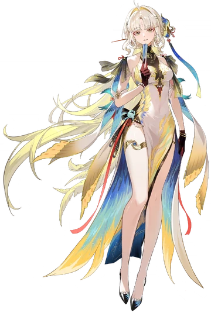
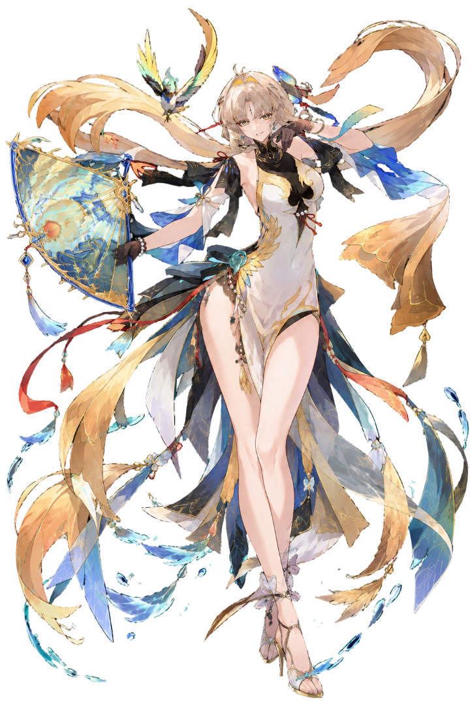
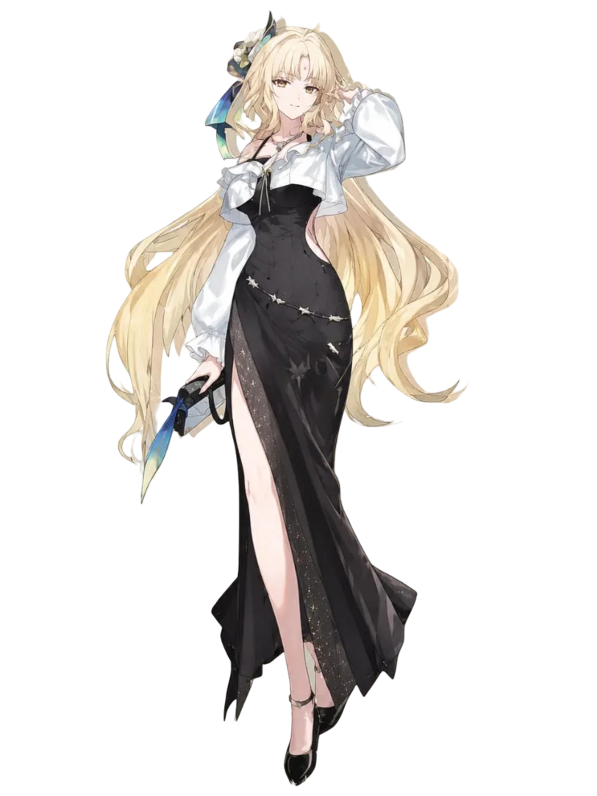
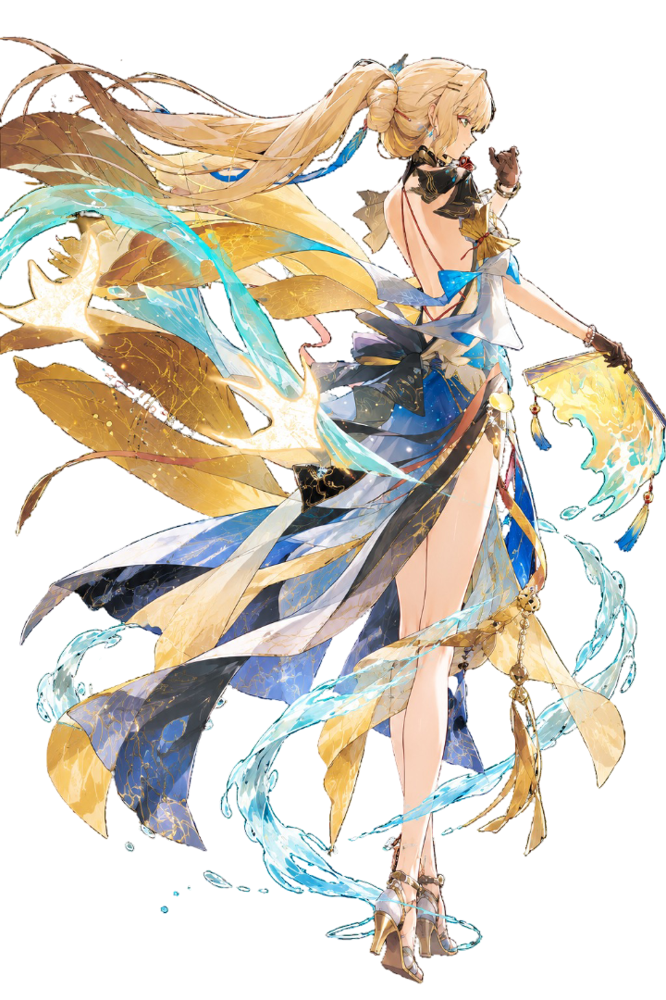
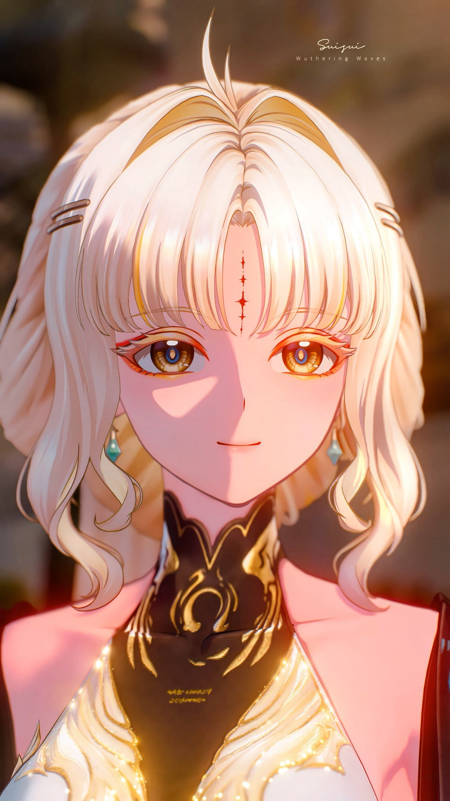
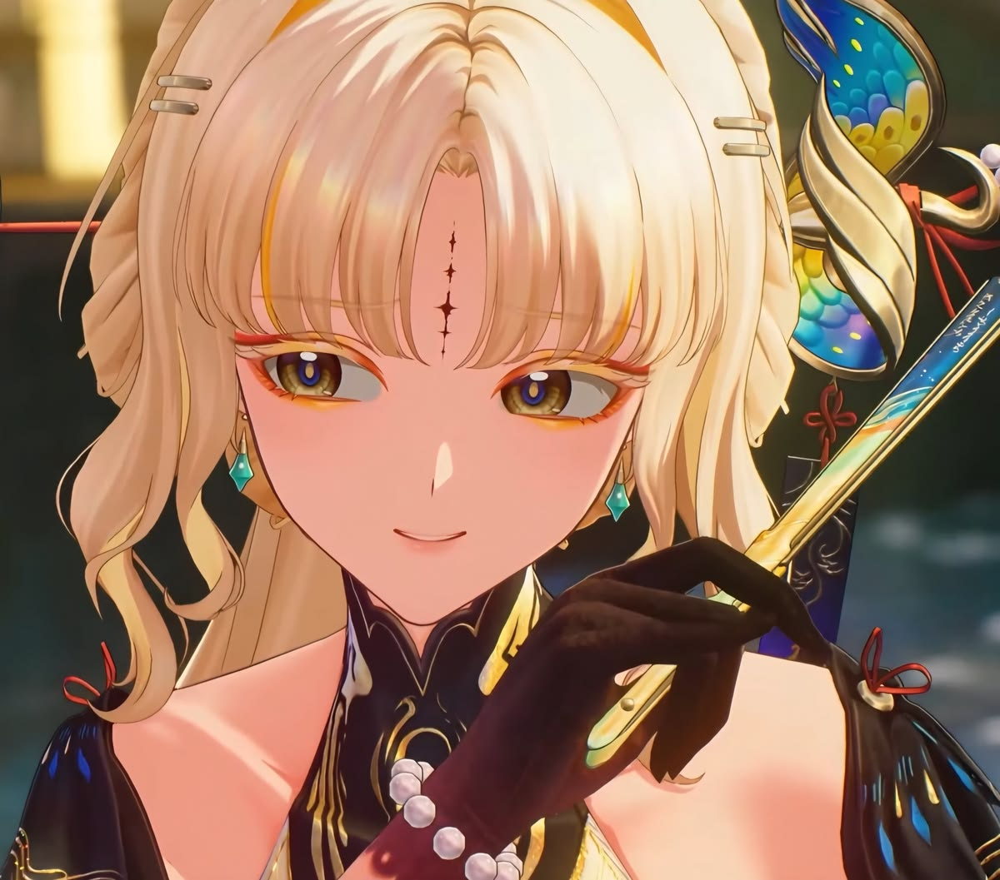
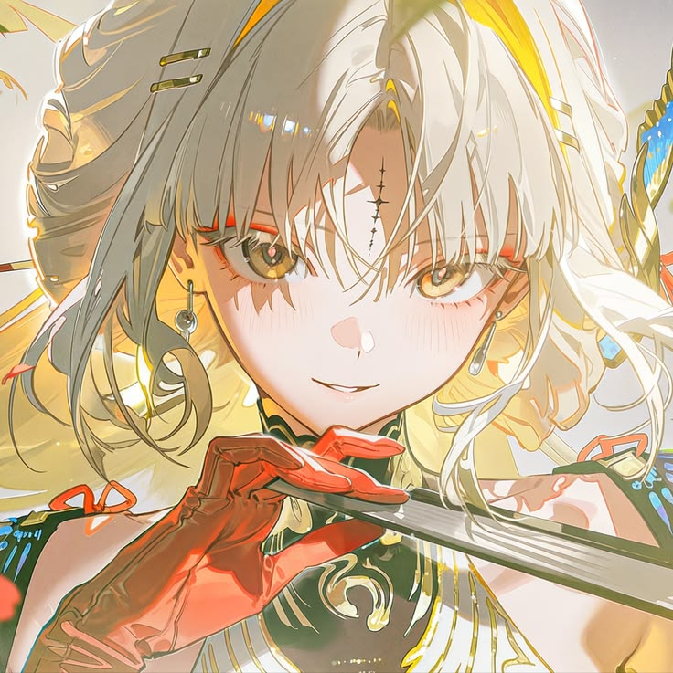
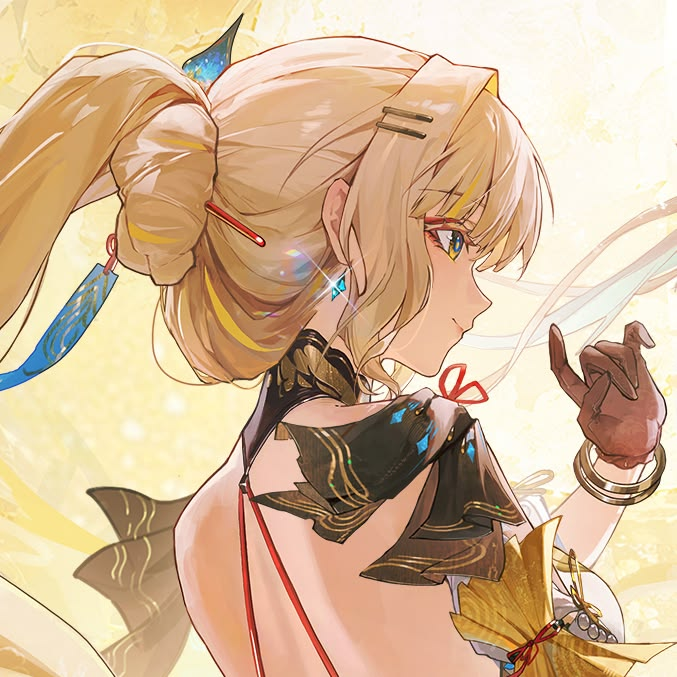
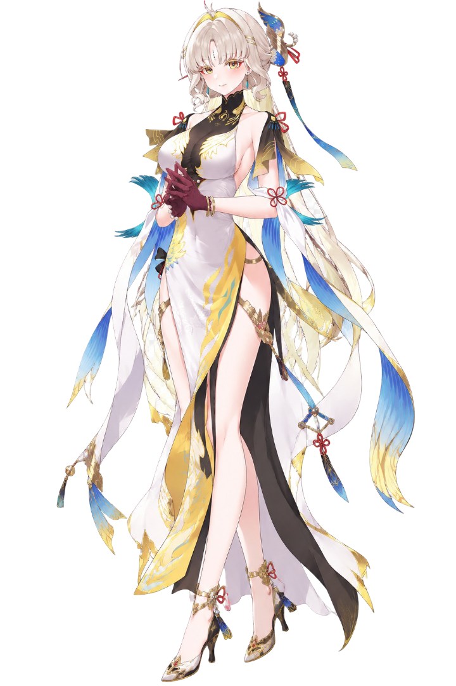

CHARACTER PROFILE
SuiSui
GELO · LV. 90 / 90
Taiga.
UID: 90391591“If this isn't enough to pave the way, then let the rivers and mountains be the proof of what I'm willing to wager.”

01
Attribute details:
HP ✝45,697
ATK ⚔1,125
DEF 🛡1,328
Reg. of energy ⚡︎261.4%
Prob. CRIT ✗26.3%
Dam. CRIT !251.0%

02
Equipped items:
Basic AttackUnraveled Spring
✦Resonance SkillVernal Screen
✦Resonance LiberationSong of Thoroughfare ★★
✦Forte CircuitLambent Gold
✦Inherent SkillSky Over Water
✦Inherent SkillGlimmering Gold
✦Intro SkillTinkling Jade
✦Outro SkillRippling Water
✦Node 6Staying True To This
✦
03
Characters / Resonators:

04
Gallery:

IMAGE 01
IMAGE 02
GIF 01
IMAGE 04
PROFILE NOTE
"Let the trade flows weave our victory."
The sound of water... I hear it. Not from the streams, or the falling rain, but from somewhere far deeper. A resonance that seeps from the core of every living thing, waking the hills, waking the waters, one by one.